①から順に抜いた文字を読むと「たらふくこぶらだがさいごのおだい」となります。
問題文にあるように「全てのお題から1文字抜いて一般的な生き物の名前」を作ると、答えはふたこぶらくだです。
SからGまで辿ると「ひとりがきけんのときかいとうはなに」と文字が拾うことができます。
火（ひ）の対面には木（き）があり、鳥（とり）の対面には剣（けん）があります。よって、貝（かい）/塔（とう）の対面にあるイラストを見ると、サイと金があるので、答えはさいきんです。
Aは「えー」、Cは「しー」と読むと、それぞれ「ホエール」「マシーン」となります。
同様に英語の読み方を追加して読みましょう。答えはうえすとです。
デジタル数字の欠けている部分をアルファベットとして読みます。
上からFACE、COLORが当てはまります。よって答えはSENSE（センス）です。
絵の名前の前と後をそれぞれ入れ替えて読みます。
一番右のイラストはエイです。よって答えはいれかえです。
モナリザの絵が2種類あります。（偽物のモナリザには腕に猫が載っています。）
本物のモナリザの額縁の赤い部分を読みましょう。よって答えはレプリカです。
A~Dの謎の答えを結ぶと「わるもの」が囲まれます。
「わるもの」を示すものといえば、「腹をわる」「口をわる」が該当します。
よって「腹」と「口」のイラストを隠すようにマスキングテープをまっすぐ貼りましょう。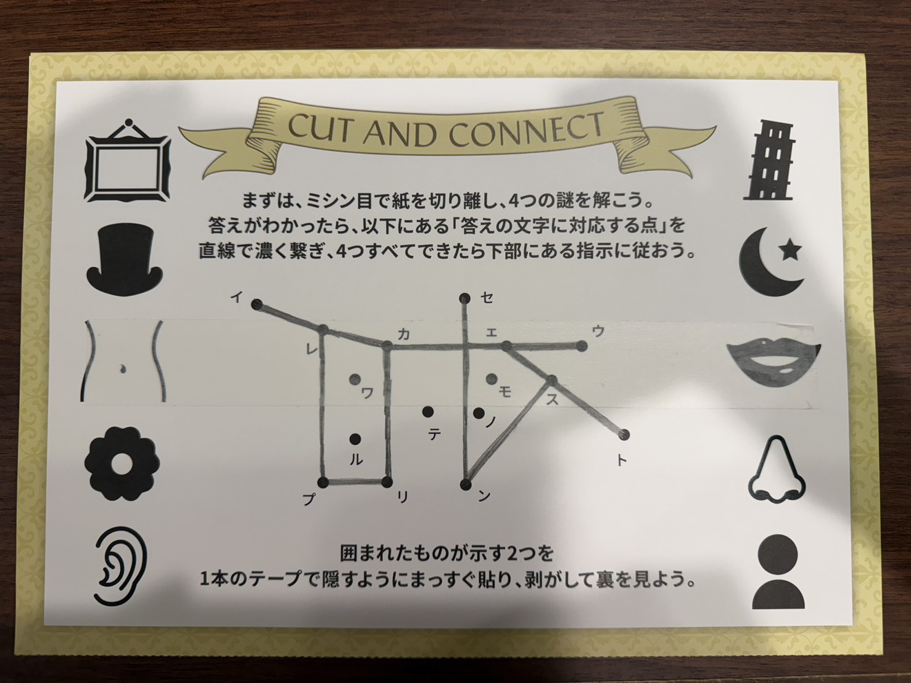
マスキングテープを綺麗に剥がすと、マスキングテープ側に鉛筆の線が写り、「スカイ」という文字が読めます。
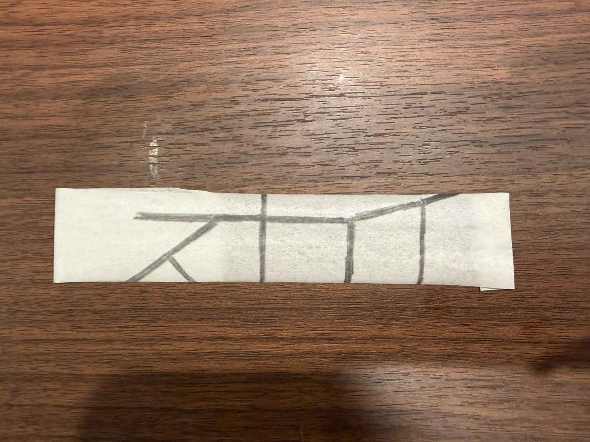
よって答えはスカイです。
指示書の通り進めると、最終的にこのような配置になります。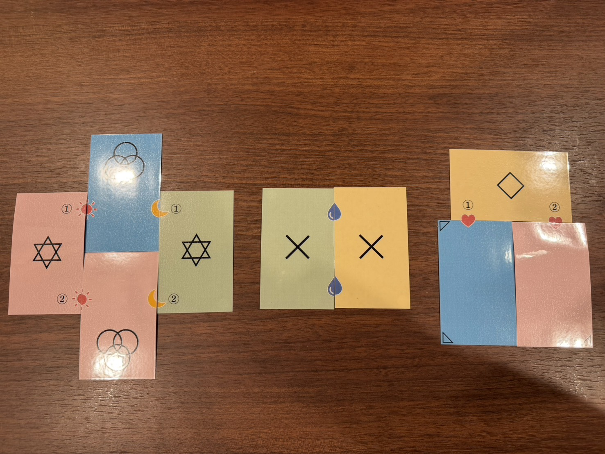六芒星とバツとひし形の間に一見文字は書かれていませんが、カードとカードの境目を見るとアルファベットの形になっており、それぞれ「H」「I」「T」と読めます。よって答えはHIT（ひっと）です。
実際に箱を積み上げた場合、このようになります。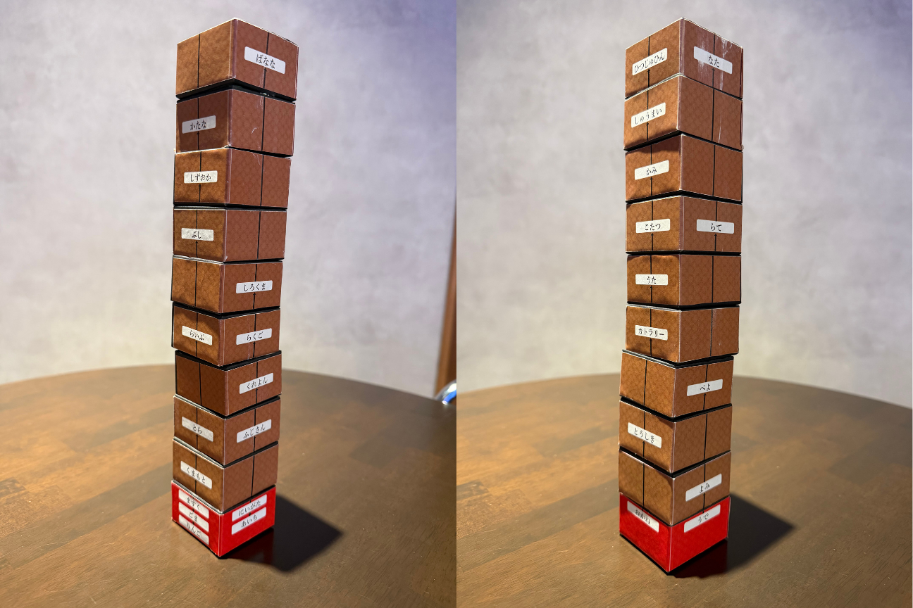
その後、上から穴を見るとその下の箱に書かれている文字が読むことができ、「こたえはまてんろう」と読めます。よって答えはまてんろう（摩天楼）です。
おはじきや計算カードがありそうなコレクションとして「算数セット」がありましたので、これをVIPオークションにて落札して手に入れて謎を解きます。
サイコロを転がすと「かぞく」を通ります。よって答えはかぞくです。
おはじきを見るとグレーのおはじきだけありませんのでそれを読むと「さかさしたから」となります。
おはじきが逆さまになっているものを下から読むと「こうのう」が読めます。よって答えはこうのうです。
硬貨に文字が貼られています。金額とイラストが対応しています。650円となる硬貨を選び、金額の高い硬貨から文字を読むと、答えはえのぐとなります。
カードを重ねて10を作り出します。75の左の"7"と"+"と13の右の"3"を組み合わせることで10を作ることができます。よって答えはだいだい（橙）です。
このようにピースを置くことができます。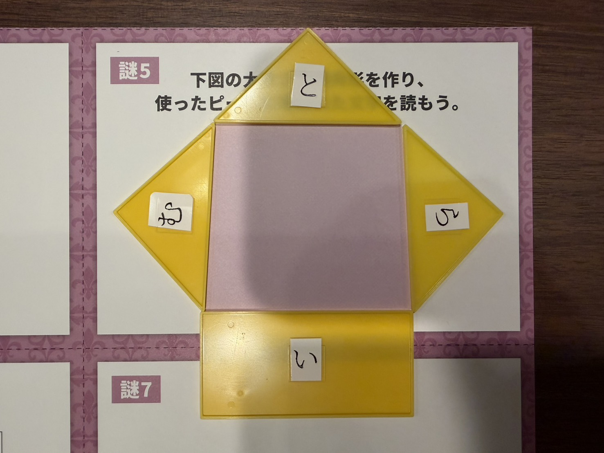よって答えはとむらい（弔い）です。
時計の長針と短針の間を読みます。よって答えはみさきです。
計算ミスが起きているカードに貼られたシールを上から読むと答えはやきいろになります。
全ての答えを埋めると「ぞうのうえのだいだいむらさききいろ」という指示文になります。算数セットの箱のふたにゾウが描かれています。該当する色のみ文字を拾い、答えはサンセットとなります。
黒マスは縦横に隣り合わないというルールとすべての白マスは縦横に繋がっているというルールから、1行目3列目が黒であることが確定します。
また、数字は矢印の先に存在する黒マスの数を表しているため、一番右の列は右上の黒以外白マスであることが確定します。
さらに、すべての白マスは縦横に繋がっている＝黒マスで盤面が分断されないため、2行目も一番左の黒以外が白マスになることが確定します。
続けて、白マスは2×2のカタマリにならないことから、3行目4列目に黒マスが来ることが確定します。
これらを続けると、最終的に1行目の3列目、5列目、2行目の1列目、3行目の2列目と4列目、5行目の2列目と4列目に黒マスが入ることがわかります。
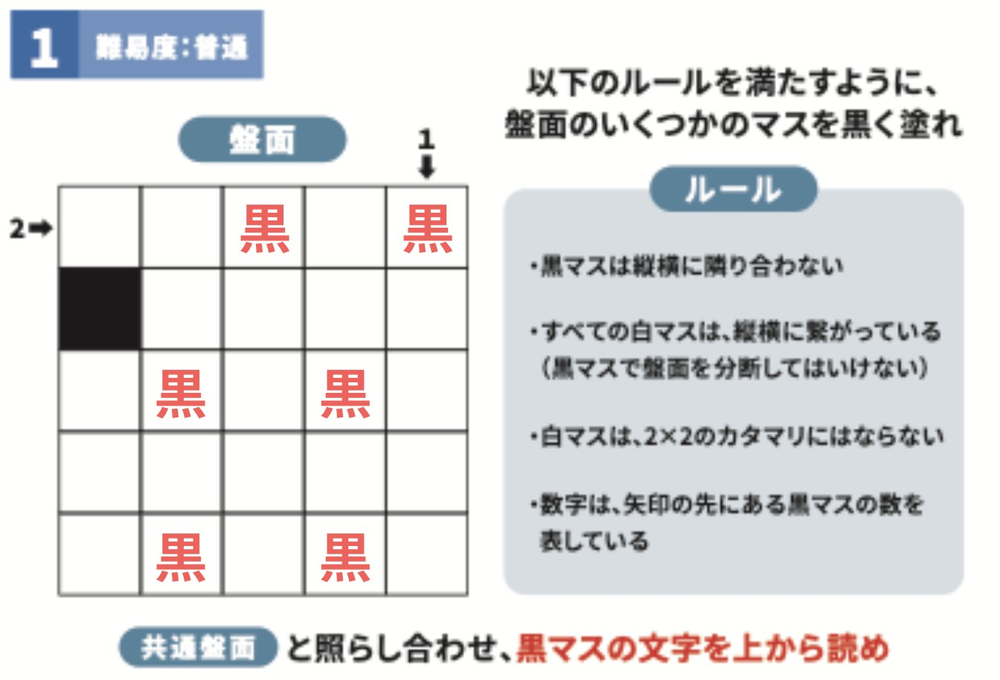
黒マスの位置を読むと「つくったことば」となります。
⚫️が2連続続く箇所には「1,2,4」「4,2,1」の2通りしか入り得ませんので、⚫️の間の2が確定します。
3行目5列名には1か4が入りますが、1が入ると上の丸が成立しないため、ここには4が入ります。よって5行目の5列目には1が入ります。
その1の左のマスには2から丸が2つ連なっているため、2か4が入ります。しかし、2が入るならば、1のマスに丸が書かれている必要があるため、ここには4が入り、その上に3が入ります。ここから自然に埋めていき、○⚫️がないところは差が1でも2倍でもないことにも注目して埋めていきます。
するとこのようになります。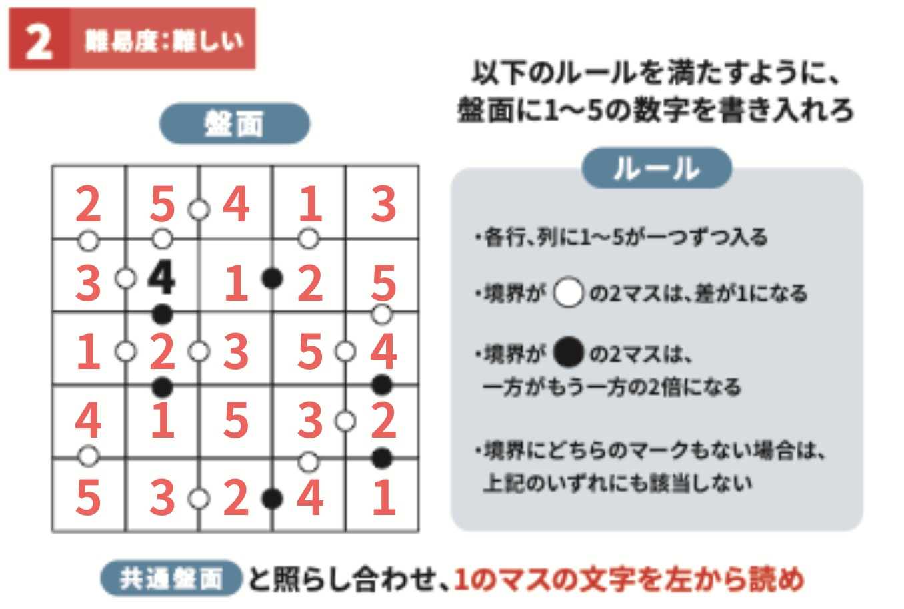
1のマスを左から読むと「しろますに」となります。
守るべきものは「法」、程度が適切であることは「丁度」、大きな町は「都市」、相容れなくていがみあうことは「対立」、鳴るもの、響くものは「音」、イライラすると出るしぐさは「舌打」、「計量」カップ、「知見」を得るが当てはまります。それぞれを盤面から探し出すと、以下のパーツが残ります。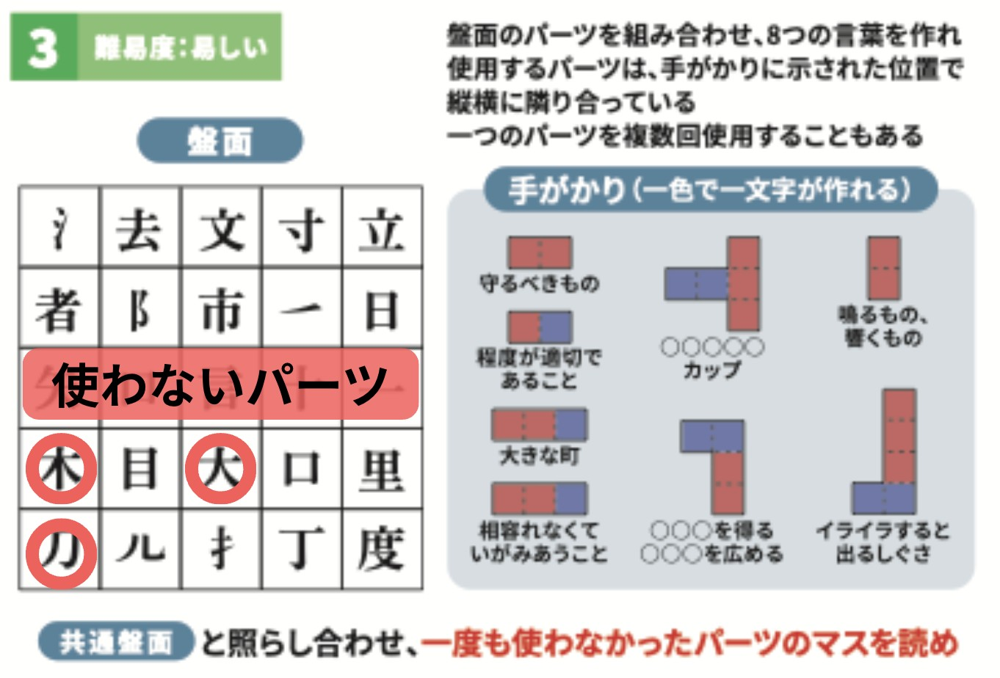よって答えは「すうじ」となります。
左下のエリアに★が一少なくとも1つは入ることから、盤面中央に★が入ることが確定します。残りを自然に埋めるとこのようになります。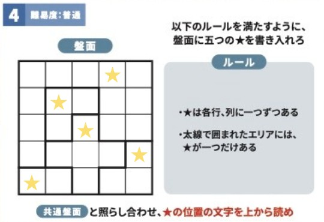
盤面と照らし合わせると「すたーのじ（スターの字）」が答えとなります。
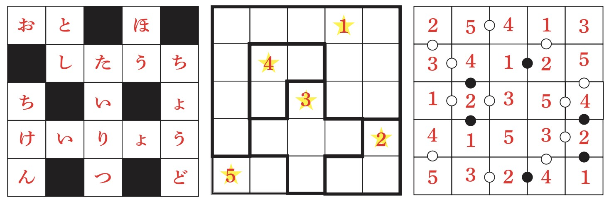答えを埋めると「つくったことばしろますに埋めろ、すうじの順に、すたーのじを読め」という指示文になります。
今までに「作った」言葉を考えるとパズル3が該当します。パズル3で作ったのは「ほう」「ちょうど」「とし」「たいりつ」「おと」「ちけん」「けいりょう」「したうち」の8つです。
これを「白マス」に埋める方法を考えます。
「白マス」が出てきたのはパズル1であり、この盤面がちょうどクロスワードの盤面になっています。そこにパズル3で作った8つの言葉を当てはめます。
そして、パズル4で導いた★の場所に当たる文字を読みます。
番号との対応はパズル2との対応を利用します。ここに対応する文字はそれぞれ「ほ」「う」「い」「し」「ん」なので、答えは「ほういじしん（方位磁針）」となります。
20つの謎を全て解くと3行目3列目の謎だけ答えは「こたえ」「せいかい」」になりません。この謎を解くことで最後の答えが導くことができます。
4×6→3×8は文字の配列を並び替えることを意味しています（3行8列に下部の文字列を並び替える）。
並び替えると「答えが答えになる謎をみて2つだけある文字読め」という指示文になります。
実際に謎を振り返ると、2つだけある文字がそれぞれあります。
上から文字をそれぞれ拾うと「こたえははっけん」と読むことができるため、答えははっけん（発見）です。
半透明シートを正しく置くと、五十音順に左から並んでいる文字列が一部見えます。ここから推測して矢印の部分を読むと答えはふたご（双子）となります。
赤点線はその正方形を回転させて形を作り出すことを表しています（回転体）。中央部にあるものが謎となっていますので、それらの回転した際の形を推測すると、CUTというアルファベットになります。よって答えはかっとです。
問題文を推測すると「1つすすめて」という文章になることが推測されます。それぞれのカタカナを1つ五十音順に進めた時にどのような漢字になるか推測します。左は上部が「ト」下部が「メ」となり、向きに着目すると「文」という漢字になります。同様にして、答えはぶんか（文化）となります。
「けむし」と「しんぶんし」のイラストが2つあります。グレーの矢印はそれらのひらがなを通るものと推測すると、左から「けむしんぶ」という文字列であると推測することができます。よって答えはむしん（無心）です。
四角を埋めると「ふたつの同じかぶとむしをふたつの方法で触れ合わせて」という指示文になります。半透明シートには「かぶとむし」と「かぶ」と「ちょうちょ」が描かれています。「ちょうちょ」を「むし」と捉えると「かぶ」と「むし」と考えることができます。
よってカブトムシ同士とカブと虫同士を触れ合わせると、一つの正方形になります。
ここで、新たに作ることのできた正方形には赤点線がそれぞれあります。
②の謎の法則と同様に、回転体にしたものと捉えると、それぞれアルファベットになります。
それぞれT,I,M,Eという形になるので、答えはタイムとなります。
飴、チョコ、バナナはいずれも甘いものですので、1行目の宝石は一つずつ「あ」「ま」「い」を表しています。上部のベン図はそれぞれの宝石の状態を示しており、左の赤い宝石3つは「あ」「か」「い」を表し、右の丸い宝石3つは「ま」「る」「い」を表しています。赤くて丸い宝石が「い」を表しています。この時本物の宝石にあたる文字を拾うと答えは「本物の宝石はかるい（軽い）」となります。
左から一円玉、五円玉、十円玉、というように並び、4567には「ちゅうい」が当てはまります。よって答えは「本物はじしゃく（磁石）に反応しない」です。
好きをLから始まり、Eで終わる2種類の英語で表します。LOVE（ラブ）とLIKE（ライク）が当てはまります。よって答えは「ブラックライトに反応する」です。
？が長方形に重なっています。長方形と横が丸3つで繋がっていることから、？の枠には丸が2つ連なることが予想されます。よって100が？には当てはまります。答えは「本物の手記は縦が100mm」です。
VIPオークションにて天秤、磁石、ブラックライト、定規を手に入れ、実際に鑑定をし、それぞれのアイテムに書かれた指示に従うと、答えは「しんさく」となります。
黄色の虫眼鏡を白抜きの金の文字に当てたときにどのように読めるかを表しています。左は上からしろかね、しろがね、はっきん、ぷらちな、右はこがね、おうごんです。数字を拾うと答えはあきかんです。
青のつく4つのものを下部の問題文から消します。都道府県は青森、熟すと赤くなるのは青リンゴ、蝶の幼虫は青虫、車で危険なことをするのは煽り運転です。それらを消すと、「えのなかかくだい」という文章になります。手元にある青い虫眼鏡を用いて絵の中を見てみると文字が小さく書かれています。「こたえはかたなだ」と書かれているので、答えはかたな（刀）です。
緑の虫眼鏡を迷路の上に置くと緑の壁が消えて通れることを利用して迷路のルートを2通り考えます。緑の虫眼鏡を迷路の上に置くと、「親権」と「演歌」を通り、置かない場合は「迷信」「映像」「海水」を通ります。通った熟語を周囲のイラストでつなぐとカタカナになります。問題の枠も緑の枠になっているので、これも緑の虫眼鏡を置いた場合と置いていない場合2通りで考えます。「親権」は「芯」「剣」、「演歌」は「円」「蚊」とつなげます。するとカタカナの「メ」になります。「迷信」は「目」「胃」「芯」、「映像」は「エイ」「象」、「海水」は「蚊」「イス」「胃」とつなげます。するとカタカナの「モ」となり、答えはメモとなります。
赤の虫眼鏡を用いて蝋燭を作り、青から緑まで線を引きます。するとこのように線が引かれます。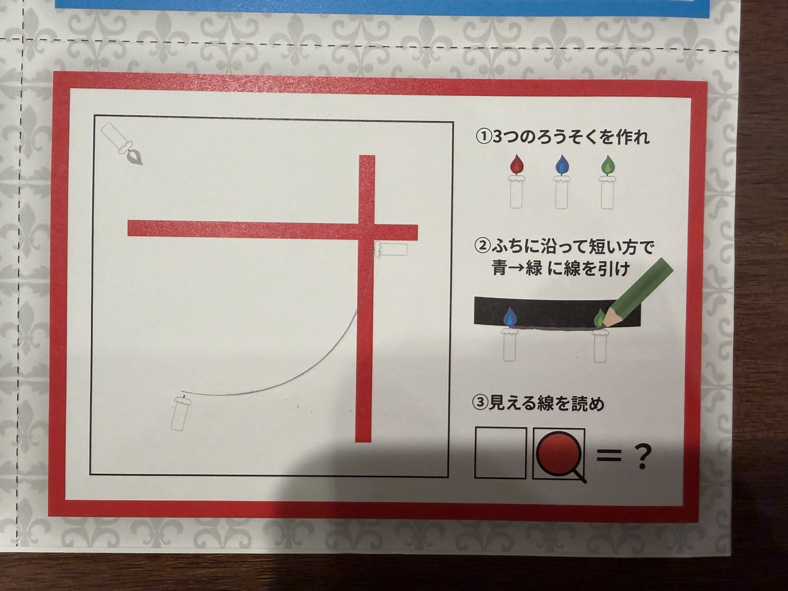
赤の虫眼鏡を置かない場合と置く場合でどのように読めるかと考えると、答えはオノ（斧）となります。
空欄を埋めると「キンをカタメタモノ」となります。＝の先には「キンカイ」が当てはまります。4つの矢印は「貝」「イカ」「金貨」「金塊」を表します。これらを色線用紙にて作ると、不要な色の線が消えて文字が読めるようになります。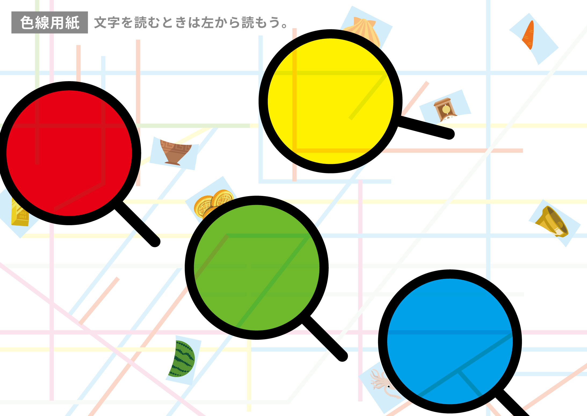
よって答えはサクセスです。
左から松竹梅、月火水木、金銀銅が縦に当てはまります。矢印の通る場所を読むと答えはげすいどう（下水道）となります。
茶色と名前のイラストが当てはまります。それぞれ太い黒四角は「茶色」と「名前」の漢字のパーツを拾っています。よって答えはへた（下手）となります。
トナカイが3匹、ソリが1つ、靴下1つで「かぞく」となっています。それぞれの数と何番目の文字を読むかが対応しています。
よって左下のイラスト4つにはカラス、カモ、魚、キノコの4つが当てはまります。よって答えはさのう（左脳）です。
数字は母音のa,i,u,e,oに対応しています（1はa,3はu）。上からマグマ、女神、ももが当てはまります。よって答えはみぎめ（右目）です。
全ての答えは上下左右の方向を示す文字が含まれています。そして穴埋めリストにはその方向を取り除いたイラストが含まれています（水道・手、脳、目）。
それぞれのイラストの該当する方向にあるイラストを順番に読みましょう。（水道の下、手の下、脳の左、目の右）
貝、毒、缶、漁がそれぞれ該当します。
よって答えはかいどくかんりょう（解読完了）です。
謎Aの切り取られた画像を見ると、背景にうっすら五十音表が描かれています。五十音表と矢印から文字ずらいだと考えると、それぞれ「く」「あん」という文字になります。
上が例示でしたが答えであると推測し、わかっている2文字と合わせると、答えはあんごう（暗号）となります。
切り取られた謎Bからは盤面はわかりませんが、変換前の文字がわかります。知りたいのは前2文字「じょ」の変換後であり、これは解説で「じょうえい」が「とおりあめ」になると明言されていることから「じょ→とお」であることがわかります。よって答えはとおぼえ（遠吠え）となります。
切り取られた謎Cには「1~5の順で」という指示文と、いちじく、にじ、サンダル、ごぼうのイラストがあります。ここから「1~5の順で結べ」という問題だと推測し、いちじく→虹→サンダルの順で結ぶと、最初の2文字は「じょ」であるとわかります。よって答えはじょうよ（譲与）となります。
謎Dの最初の文字は「シ」であり、どうやら2文字目と3文字目は一緒に見えます。ここから、答えはしののめ（東雲）であるとわかります。
抜け落ちたのはタヌキ、鳥居、トリノ、ナイトです。
「サブタイトル」からたぬき暗号のように文字を消していきます。
トリノはサブタイトルの「ル」の左側を取り除くものとして考えます。
よって答えはサブレです。
イラストの文字で計算をします。
きた＋しまい＋くりーくしーたい＝きまり
となり、答えはきまり（決まり）です。
漢字の個数を読み、四字熟語にします。
抜け落ちたのは10個の「人」と10個の「色」です。
よって答えは十人十色です。
単語の一部を書き換えていく謎です。
上から、ほうかい、こっかい、こうたい、こうかん、となります。
よって答えはこうかいとなります。
最後に残ったパーツから問題文を作り上げると「4つの答えを並び替えて答えは食べ物」となります。
4つの答えとは「さぶれ」「じゅうにんといろ」「きまり」「こうかい」です。
並び替えると「きりかぶ」「さいころ」「うに」「といれ」がイラストとしてあることが推測でき、残ったものが「まんじゅう」となります。
よって答えはまんじゅうです。
50音の一部を切り取った問題です。
「ひにち」をヒントに図形の位置を読んでいくと謎が解くことができます。
答えははむすたーです。
指示の通り、ハムとスターを触れ合わせます。
一番上の黒い太線と青い角度を示すものが折り紙内にありました。
これは45度のラインを表しています。
それに倣って、「ヨンジュウゴ」と四角に埋め、下部の足し引きをすると
「ヨジジュクゴ」という言葉が出てきます。
折り紙の中で「花鳥風月」を作ることができます。それぞれを1文字目から順に触れ合わせます。
四角で囲まれた単語をアルファベットにして逆から読むと右側の単語になります。
isuはusi、inuはuni、irodoriはirodoriとなります。よって指示はiromamo→omamori（＝お守り）となるので、同じお守りを触れ合わせます。
この紙の形は正方形なので「SEIHOUKEI」とアルファベットで埋めることで9マスの空欄を埋めることができます。
すると、「家と宝石と飛行機を順に合わせて」と指示がでてきます。
それぞれの折り紙の中から矢印を探し、その先の文字を④に書き入れます。赤の折り紙からは「赤点線」、青の折り紙からは「谷おり」、黄色の折り紙からは「サスモノ」、緑の折り紙からは「直角」を見つけることができます。よって④の指示文は「全ての赤点線を谷折りして直角にしたら青と緑にある（テープのイラスト）にテープを貼り、この紙の下部で「サスモノ」が4つできるように紙を立てよう。」となります。
「サスモノ」とは、剣、指、傘、将棋です。これらができるように紙を立てるとこのようになります。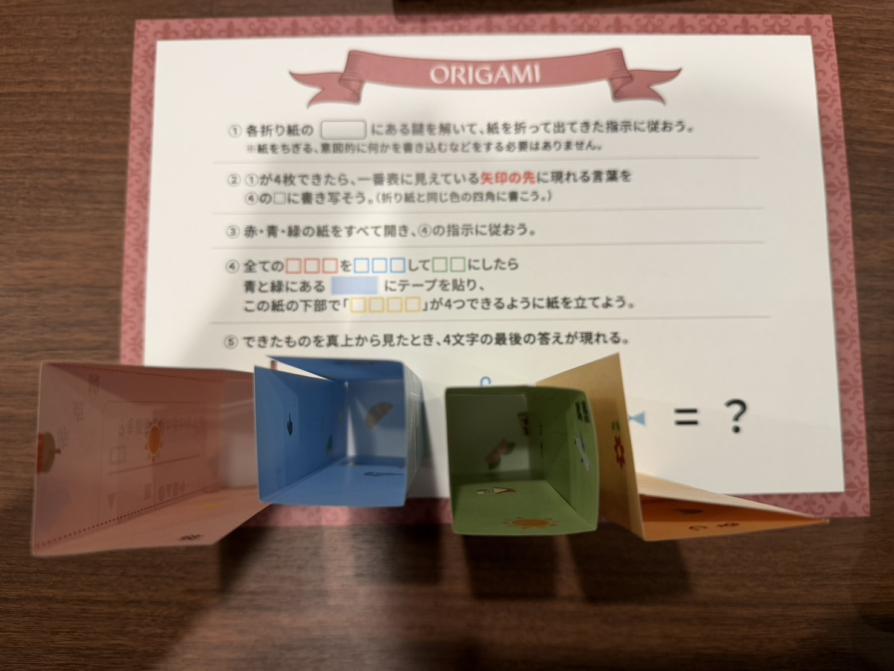よって答えはCOOL（くーる）です。
謎の答えは左上から「しこみ」「げんが」「あひる」「あーと」「こううん」「りろん」「みぎ」「かめら」です。明るいマスを読むと「しみがあるところみぎから」となります。謎の中でシミがある部分を右から読むと答えはあめあがりとなります。
PRICEがICE、PLACEがACEとなっているので、後のアルファベット3文字を拾います。STARTの後のアルファベット3文字を拾うと、ARTとなり、答えはあーとです。
「かくど」の順に線を引くと「分度器」のようなイラストが現れます。同様に、「ぶんぼうぐ」の順に線を引くと「鉛筆」のようなイラストが現れます。「のこりもの」という順に線を引くと砂時計のようなイラストが現れます。よって答えはすなどけい（砂時計）です。
問題文の何文字目かが対応しています。(例:9は問題文の9文字目に対応しているため「う」)よって答えはてんとです。
矢印にはそれぞれ「ころがす」「のせる」が当てはまり、雪だるまを作るときの動作を表しています。よって答えはスノーです。
方角のアルファベット(NEWS )がそれぞれに当てはまります。よって答えはワインです。
カタログの中の謎コレクションの説明文を読み、該当する単語が含まれるコレクションのタイトルが四角に当てはまり、上からCUT AND CONNECT、HARMONY、NO ORDERがはてはまり、MONEY、つまり答えはマネーとなります。
謎のコレクションのタイトルから文字を拾います。数字はコレクションNo.、個数は何文字目を拾うかを表しています。3,16,10,15はそれぞれC,O,I,Nを拾えるので、答えはコインです。
No.18のHEART WARMINGのタイトル名を丸に当てはめます。よって答えはアームです。
「いちじゅうひゃくせんまん・・・」と当てはまります。よって答えはせんちゃくです。
四角には「お」の段が当てはまります。よって答えはほのおです。
上からONE,TWO,THREE,FOURと数字のアルファベットが入ります。よって答えはげんてんです。
赤枠の中のrからnを拾うとewsが拾うことができます。nと合わせるとnewsとなり、イラストと合います。
同様にして、Wからiを読むとhatを拾うことができますので、答えははっと（hat）です。
それぞれの道具ができることが当てはまります。左から「たつ」「さす」「かく」となり、五十音表を表しています。よって答えはちしきです。
HとTを左の枠に当てはめて"田"を作ります。Iは"工"と読むことができます。よって答えはさいく（細工）です。
カタカナが一部2つ重なっています。その部分を「倍」と読みましょう。上からデバイス、しばいぬとなります。よって答えはサバイバルです。
影は太陽の位置を、太陽の位置と方角はその時間帯を表しています。よって上から「ごぜん」「しょうご」「ごご」が当てはまります。よって答えはしぜんです。
このようなルートになります。
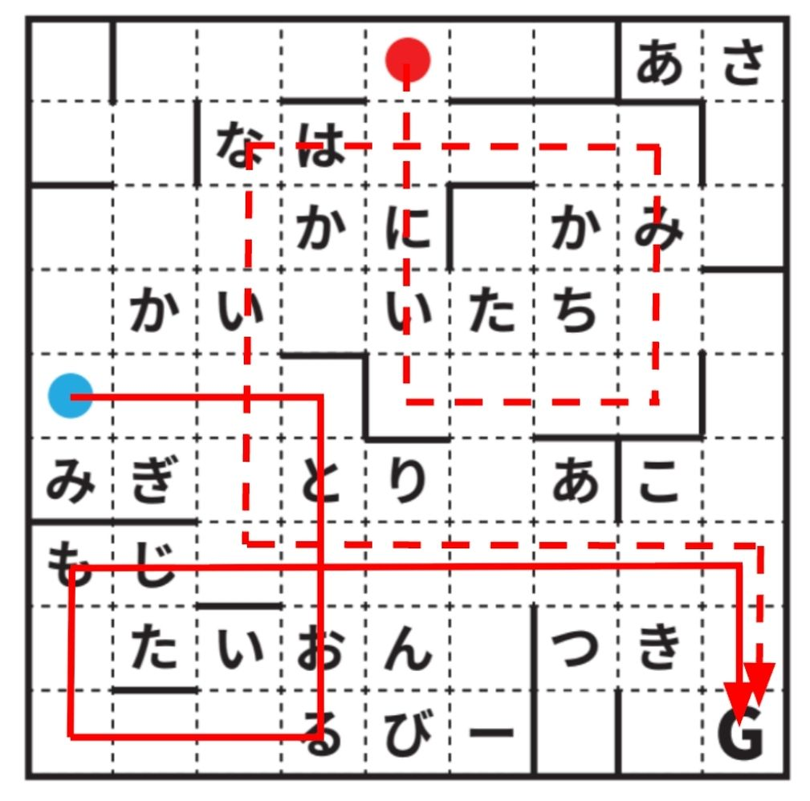
ルートで囲まれた文字を読むと答えはかたちとなります。
示されたものと同じ形、または同じ色の記号同士を結びます。答えはシンシツ（寝室）となります。
イラストは鉄棒を表しており、それぞれ「まえまわり」「さかあがり」が埋まります。よって答えはわがままです。
同じ形を当てはめます。上は8日を「ようか」と読むことで「ようかん」になり、下には問題番号の20を当てはめることで「こたえはたちば（答えは立場）」となります。
指のイラストは1指ずつ「フィンガー」を表しています。
立てている指をそれぞれ読み、ドルフィン、プードルを表しています。
よって答えはげんが（原画）です。
レフト、ライト、ひだり、みぎ、と当てはまります。よって答えはみぎです。
上からWIND,WINE,WING,WINKとなります。よって答えはうぃんぐです。
赤四角には「コワイロ」が入り、「警察官はコワイロ（声色）を変えて、コワイロ調（怖い口調）でワイロ（賄賂）を要求した。となります。
よって答えはこわいろ（声色）です。
「といならびかえてよめ」を50音順に並び替えると下の丸に当てはまります。
よって答えはカメラです。
一週間ができるように繋ぎます。すると「ほとけのあいだ」と出てきます。
「ほ」と「け」「イ」と「ム」の2パターンの間を読むと答えが現れます。
答えはすいとう（水筒）です。
アルファベット小文字のeのようにループが作ることができます。中央にある「はなたば」がループの枠の外になります。
よって答えははなたば（花束）です。
緑の角度からみると「エ」、赤からは「コ」、青からは「ロ」に見えます。
よって答えはエゴコロ（絵心）です。
「さ」が色紙の中に書かれているので「サ"イン"色紙」と表されています。
蝶のなかに「い」が書かれているので、よって答えはいいんちょう（委員長）となります。
白をカリフラワー、緑をブロッコリーとして解きます。
数字はそれぞれの何文字目かを表していますので、11はカブを表しています。
答えはカラーとなります。
ここで行われていることとはオークションです。アルファベットで四角に埋め、叩かれていない場所のアルファベットを読みましょう。
答えはACTION（あくしょん）です。
迷路を辿ると「いかした と かいうえ と むしした をよめ」と出てくるので、イカの下、貝の上、虫の下を読みます。
よって答えはあひるです。
上から、おもさ、ながさ、かくど、がそれぞれのイラストに1文字ずつ当てはまります。
よって答えはおなかです。
点の数を英語で表します。
上からアスリート、ミスリードを表しています。
よって答えはフォーカスです。
問題文の中に出てくるひらがなの割合を表しています。（はが問題文の文字数の中で20%を占めている）
よって答えははかせです。
「ひこうせん」から飛行船が下にいる場合は50音順で一つ進める、上にいる場合は一つ戻すことを表しています。
上から笛、波形を表しています。
よって答えはさいんです。
上から、おぼん、リボン、？、フロン、ふだんが入ります。よって答えはりろん（理論）です。
筆の書き方がそれぞれの漢字の後につきます。口はとめているいるので、四角には「くちとめ」が入ります。よって答えはくちどめです。
イラストをヒントに、やることを考える謎です。
点線上部のみを読んで反転し、左から読みます。
答えはてんくう（天空）です。
左から「えー、びー、しー、でぃー、いー」と入ります。よって答えはえびです。
「かい」「とう」「は」で始まるように並べると「に」「いご」「さんま」が対応し、文字数順と考えられます。
文字数順に並べると、「に」「いご」「さんま」「いちじく」「びぼうろく」「すてーしょん」
となり、対応する文字を読むと「かい」「とう」「は」「せい」「し」「き」となるため答えはせいしき(正式、整式)です。
この謎そのものに「いちまいなぞ」をあてはめます。
答えはまないたです。
裏側に24があると想像し、それぞれに「おもて」「うら」をあてはめます。答えはもうら（網羅）です。
それぞれのアルファベットの、数字番目の文字を読んでいます。答えはワックスです。
上部のヒントを手がかりにマスに入る文字を考えます。赤に「し」青に「こ」を入れると例示が成立する。答えはしこみ（仕込み）です。
絵の色と、それぞれのパーツが何角形かを考えて読む謎です。
上から順に「○色」と「□角形」を対応させ、○の色を英語にしたときの□番目の文字を読むことで答えがわかります。
答えはエンジェルです。
曜日を漢字の画数で表現しています。
8 画は金、3 画は土、なので答えはどんき（鈍器）です。
漢字のパーツがいくつあるかを表しています。
オークションで行われるのは「出品」、中国地方の都道府県は「山口」
答えは出口です。
白マスにはこのように埋まります。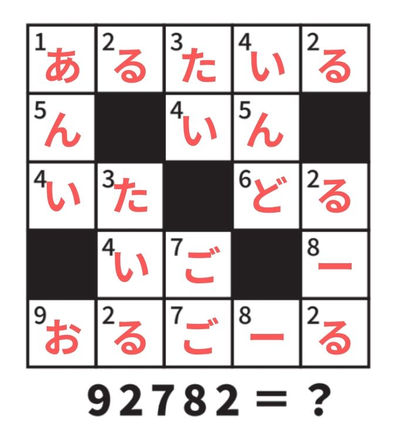よって答えはおるごーるです。
全体を見ると「すべてのせんたどりいちどだけとおるじうえから」と読めます。全て辿っても解けるが、あみだくじはその性質上全ての縦線は一度、横線は右からと左からの二度通ると考えられます。よって縦線に書かれた「せいとう」が答えです。
中心に円を合わせると、時計のように見えます。
上に「さんじ」を当てはめると「三次元」となり例示が成り立ちます。よって答えはくじらです。
abcdefgのアルファベットの穴の部分のみ抽出しています。
よって答えはcafe（かふぇ）です。
上から、かくしつ、いぎょう、ちょうさ、くうかん、と入ります。
すると縦に左から、かいちく、くぎょう、しょうか、つうさん、と入ります。
矢印の通る部分を読むと、答えはかいうん（開運）になります。
北海道と○○地方が入るようにスケルトンを埋める問題です。
ほっかいどう、とうほく、かんとう、きんき、ちゅうぶ、ちゅうぼく、きゅうしゅう、しこくが入ります。
よって答えはこううんです。
左に干支、右に曜日が当てはまります。
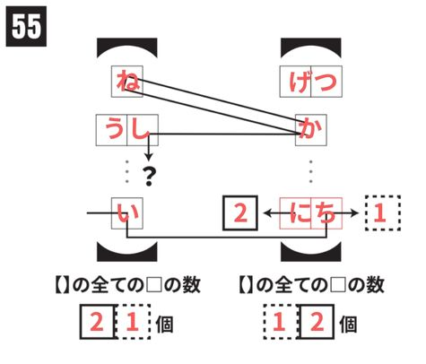
よって答えはかねかし（金貸し）です。
同じ記号には同じ文字が入ります。＜＞゛＜＞゛が2文字濁点を繰り返していることから「なぞなぞ」であることが推測できます。
ここから、なぞなぞの問題文と下部の問題文を推測します。
【なぞなぞの問題文】
「まえ」は「まえ」でもだれしもについている「まえ」ってな~んだ？
【謎の問題文】
このなぞなぞのこたえ=？
こたえはさんもじ
となります。
よって答えはなまえです。